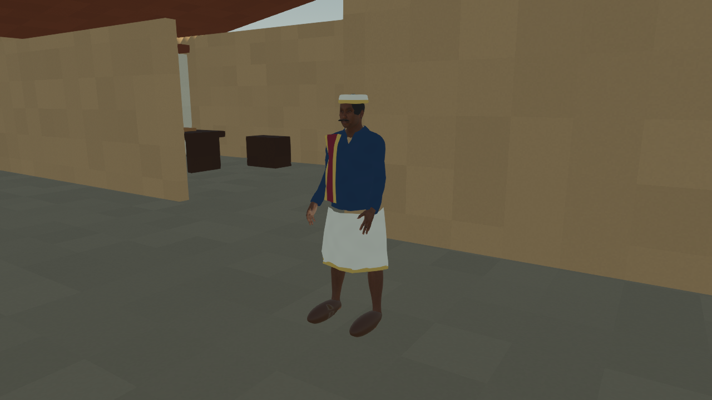
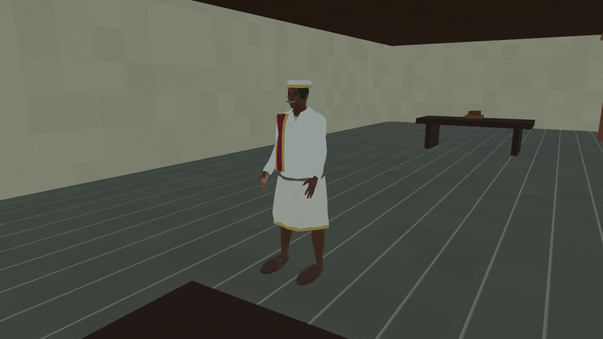
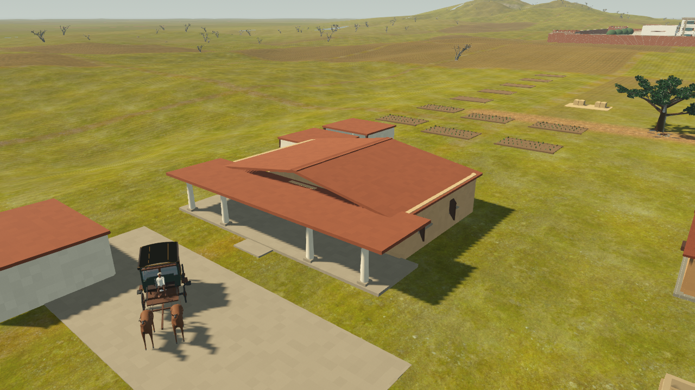
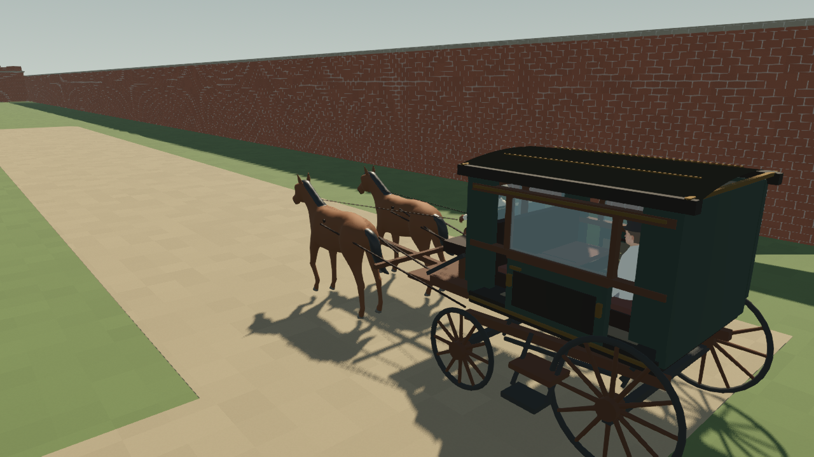

Residents look different from village staff


30 September 2026 · World and wardrobe candidates · Final realism review open


Three homes, four residents, nine staff and three coaches. Each home has a cook, water bearer, coachman, service area and coach shelter. Residents use short occupied driveway journeys and return home.


Population, 13 separate AnimationTrees, two new home entrance sweeps and all three round-trip routes passed. Rendered previews reviewed separately. Hand contact, seated cloth, grounded soles, continuous motion, individual faces and final period architecture/costumes remain open. Boarding is instantaneous; routes are driveway demonstrations.